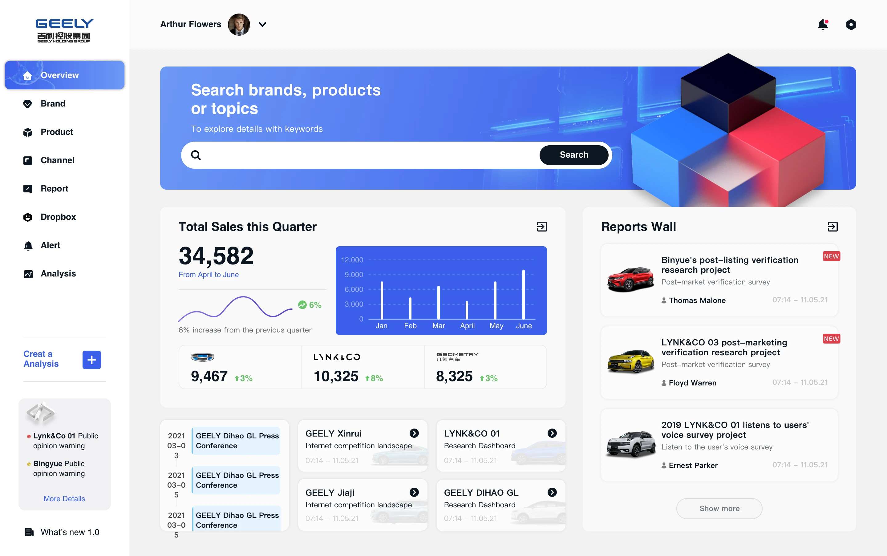
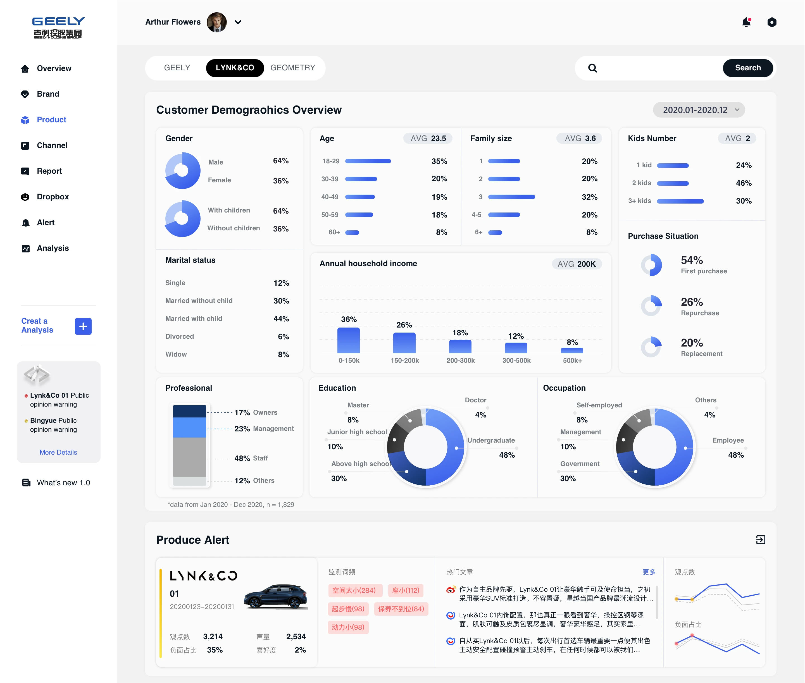
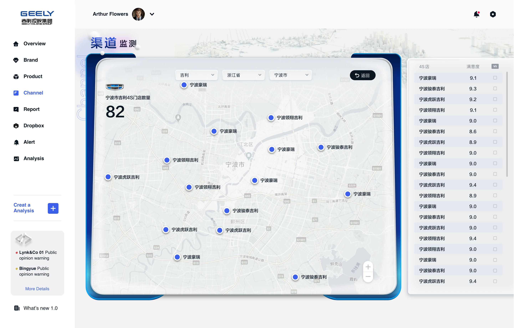

服务品牌洞察、区域分析、门店表现与产品体验等多类经营决策场景。
ENTERPRISE SAAS · CEM · DATA PLATFORM
吉利 CEM客户体验管理系统设计
围绕品牌、车型、区域、门店与用户反馈等多维数据，我将吉利 CEM 平台整理为一套既适合管理层快速看全局、也适合执行层持续下钻分析的企业级后台体验。
CEMOverview ·
Insight · Action
Insight · Action



需要兼顾管理层的全局判断与业务团队的精细分析，避免页面只“有数据”却难以行动。
通过总览、地图、产品分析与报表模块，让复杂数据具备更清晰的阅读秩序。
PROJECT OVERVIEW
把分散的客户体验数据，组织成更容易理解、比较与下钻的一套管理界面。
这个项目的重点，不只是把指标摆在页面上，而是让不同角色都能更快找到自己的判断依据。为此我以总览页为起点，建立“先看总体—再看区域—再看产品/反馈”的阅读路径，并通过卡片、趋势图、地图、表格和标签的组合方式，让平台既能承接高层决策，也能支持日常运营分析。
通过总览、区域与产品模块形成自然递进，让用户更容易从宏观进入细节。
KPI、趋势、地图和明细列表分工明确，帮助用户同时完成扫描、对比与定位。
通过浅色背景、蓝色强调与清晰栅格建立专业、可信、可扩展的后台气质。
PAGE ANALYSIS
页面分析
以下页面按原始文件编号 01—10 依次展示，完整呈现吉利 CEM 系统的页面结构、数据组织与体验设计。
总结与思考
吉利 CEM 项目的价值，在于把原本分散的客户体验数据转化为一套真正可阅读、可比较、可行动的后台界面。通过建立稳定的信息结构与企业级视觉语言，平台不仅更适合日常分析，也为后续模块扩展与多角色协作打下了更稳固的基础。